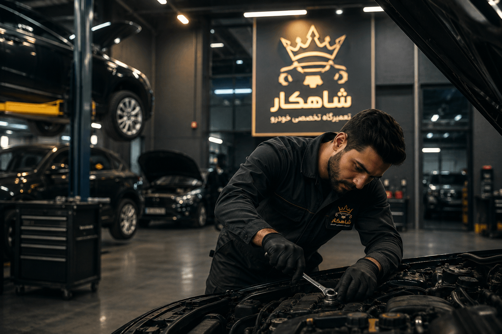
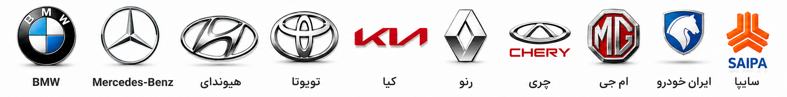

سالها تجربه در تعمیر تخصصی خودرو
شاهکار با بهرهگیری از تکنسینهای متخصص، تجهیزات مدرن و استفاده از قطعات باکیفیت، خدمات تعمیر و سرویس خودروهای داخلی و خارجی را با بالاترین استاندارد ارائه میدهد.

درباره شاهکار
هدف ما ارائه خدمات تخصصی، سریع و مطمئن برای خودروهای داخلی و خارجی است. ما معتقدیم کیفیت خدمات، صداقت در ارائه مشاوره و رضایت مشتری مهمترین سرمایه هر مجموعه حرفهای است.
با استفاده از دستگاههای پیشرفته عیبیابی، تجهیزات استاندارد و تیمی مجرب، تلاش میکنیم هر خودرو با بهترین کیفیت ممکن تعمیر و آماده تحویل شود.
+15
سال تجربه+8500
خودرو تعمیر شده98%
رضایت مشتریان24/7
پشتیبانیدلایلی که مشتریان ما را انتخاب میکنند
تکنسینهای متخصص
تمامی خدمات توسط نیروهای باتجربه و آموزشدیده انجام میشود.
تجهیزات پیشرفته
استفاده از دستگاههای مدرن عیبیابی و ابزارهای استاندارد روز دنیا.
گارانتی خدمات
تمامی خدمات ارائه شده همراه با تضمین کیفیت انجام میشود.
تحویل سریع
مدیریت زمان و تحویل خودرو در کوتاهترین زمان ممکن.
ماموریت ما
ارائه خدمات تعمیر خودرو با بالاترین کیفیت، شفافیت در هزینهها و ایجاد اعتماد بلندمدت میان مشتری و تعمیرگاه.
چشمانداز ما
تبدیل شدن به یکی از معتبرترین مراکز تخصصی تعمیر خودرو با استفاده از فناوریهای روز و ارائه خدمات حرفهای.
برندهای تحت پوشش

آماده سرویس یا تعمیر خودروی خود هستید؟
همین حالا با کارشناسان شاهکار تماس بگیرید و از مشاوره رایگان بهرهمند شوید.